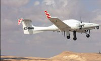
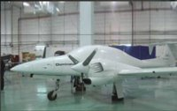
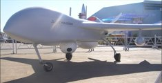
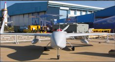
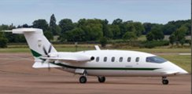
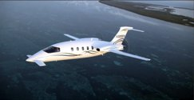
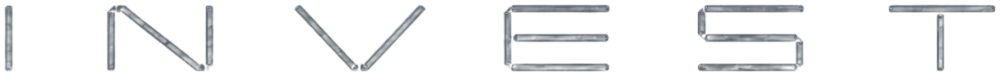
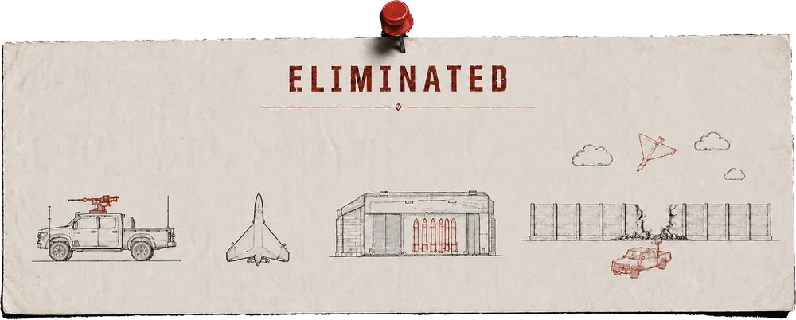
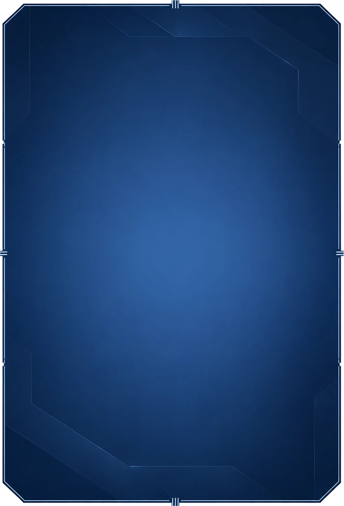

AIRSHIELD.AI / AI.onSuperSPECIFICATIONSBLOCK 0 PROTOTYPE / BLOCK 1 FIRST MODEL
Block 0 is the converted reference aircraft that carries the program to first flight and establishes the flight-test baseline. Block 1 is the production intent platform built on the same geometry, with a lighter structure under a heavier take-off weight. The airframe does not change shape. The useful mass goes from 460 kg to 700 kg.
Parameter
Block 0 / prototype
Block 1 / first model
Propulsion
Engine
Rotax 914 F3, turbocharged
Rotax 916 iS/iSc, turbochargedTurboprop on JET A as a growth option
Take-off power
84.5 kW / 115 hp at 5,800 rpm
117 kW / 160 hp at 5,800 rpm
Continuous power
73.5 kW / 100 hp at 5,500 rpm
100 kW / 137 hp at 5,500 rpm
Mass and capacity
MTOW
1,000 kg
1,200 kg
Platform weight
540 kg planning estimate
500 kg target, includes the 35 kg UAV kitComposite and advanced material saving toward 400 kg is growth, not credited
Useful mass
460 kg above the platform
700 kg above the platform
Fuel
250 kg at take-off, 240 kg mission fuel
250 kg baseline, 450 kg long endurance
Mission payload
210 kg with 250 kg fuel
300 kg nominal, up to 450 kg with 250 kg fuel
Fuel and payload split
250 and 210 kg, single configuration at 1,000 kg MTOW
Traded inside 700 kg: 450 and 250 for 50 h, 400 and 300 nominal, 250 and 450 for maximum payload
Hardpoints
Not defined in the Block 0 data set
2 at 100 kg, fuel or payload by configuration
Performance
Cruise
105 to 120 KTAS
150 to 170 KTAS
Maximum speed
120 KTAS at sea level, 137 KTAS at 15,000 ft
150 to 170 KTAS, growth potential to 200 KTAS
Climb, sea level
800 to 900 ft/min at take-off power
1,000 to 1,100 ft/min at take-off power
Operating altitude
20,000 to 26,000 ft class
23,000 ft on the baseline engine, goal above 30,000 ft
Endurance
28 h and above at optimum loiter, 240 kg mission fuel
50 h at optimum loiter, 450 kg fuel at 1,200 kg MTOW
Field and envelope
Stall, clean
47 KIAS at 1,000 kg
53 to 55 KIAS at 1,200 kg
Vne
152 KIAS interim
Above 200 KIAS as a design objective, not cleared
Take-off ground roll
270 m preliminary
280 m preliminaryPaved runway, ISA, sea level
Take-off over 15 m
385 m preliminary
400 m preliminary
Crosswind
15 kt baseline
15 kt or better, to be validated in flight test
Geometry
Wingspan
17.47 m / 57.3 ft
17.47 m baseline, final geometry subject to freeze
Wing area
18.70 m² / 201.3 ft²
18.70 m² baseline
Length
8.08 m / 26.5 ft
8.08 m before the final outer mould line and fairing freeze
Height
1.93 m / 6.3 ft
1.93 m class
Aspect ratio
16.32
16.32 baseline
Dihedral
2.5°
2.5° baseline
Landing gear track
5.35 m
5.35 m, strengthened installation for 1,200 kg
27 PARAMETERS / 5 GROUPSSAME AIRFRAME / 240 KG MORE USEFUL MASS
AIRSHIELD.AI / AI.onSuperTHE CREWFOUNDER MANIFEST / THREE FILES
COMMAND01
AVIEL ALONI
CO-FOUNDER & CEO — LT. COL. (RES.), IAF
Thirty years of UAV and defense programmes — Aeronautics’ Propulsion Division, IMOD and MAFAT.
FULL FILE +ENGINEERING02
KOBI BLANK
CO-FOUNDER & CTO — MAJ. (RES.), IAF
Thirty years of mechanical, software and UAV engineering — Elbit, Silver Arrow and BlueBird.
FULL FILE +AUTONOMY03
DORON ALONI
CO-FOUNDER & AI LEAD — AI & DATA
Three decades of AI and software infrastructure — Texas Instruments, Samsung and Cybereason.
FULL FILE +
3 FOUNDERS90+ YEARS COMBINED / UAV, ENGINEERING & AI
AIRSHIELD.AI / AI.onSuperINVESTOR FILESIX NOTES / THE ASK, THE COST, THE SCHEDULE, THE MARKET, THE FOCUS, THE MODEL
THE ASK01
WHAT WE ARE ASKING FOR
$10M
Ten million dollars, against a stake we set together, at the table. Nothing about the equity is pre-decided. Bring a number.
WHAT THE MONEY BUYS
An eighteen-month run, kickoff to a live trial18 mo
Engineering to the first article€720,000
Running the programme€120,000
First aircraft, direct build cost€645–675K
VR control station, direct build cost€75–105K
STAKE IN NEGOTIATIONTERMS OPEN / NO PRE-SET CAP
Every figure is broken out on Note 02, and every month of it is drawn on Note 03. Ask about any line.
BUILD COST02
WHAT ONE AIRCRAFT COSTS
Direct cost in euro, before overheads and before profit. The same basis for the aircraft, the demonstrators and the first delivered system.
LINE ITEM / DIRECT €
Platform & propulsion360K
AionSuper base airframe plus the first propulsion upgrades.
Servos & flight control55K
Fly-by-wire actuation and ground steering.
SATCOM & LOS link62K
Command, telemetry and the backup channels behind them.
EO / IR35K
Baseline observation sensor for the demonstrators.
Power & wiring13K
Electronics, backup battery, harness.
AKP payload50K
Demonstrator payload, priced off the first BOM.
Contingency70–100K
Extra procurement, fit-out, and the things nobody lists in advance.
Aircraft, built645–675K
VR control station75–105K
CHARGED ONCE, NOT PER AIRCRAFT
NON-RECURRING ENGINEERING€720,000
PROGRAMME OPERATIONS€120,000
No overhead, no margin and no financing sit in these numbers. This is what the metal and the hours cost, so you can put your own margin on top and see what is left.
SCHEDULE03
EIGHTEEN MONTHS TO A LIVE TRIAL
Five stages, each holding its own slice of the eighteen months. Three tracks run through every one of them — the platform, the system around it, and the kinetic payload.
01FoundationM0–3
PLATFORMAircraft brought to Israel; MOU and exclusivity signed
SYSTEMRequirements frozen; system architecture defined
PAYLOADPreliminary design and engineering analyses
SYSTEMGround control station and VR; LOS / BLOS / SATCOM datalinks
PAYLOADDetailed design; control interfaces
03Critical design and first testingM6–9
PLATFORMCritical design review; ground testing
SYSTEMMission computer; sensors
PAYLOADGround demonstration and simulation
04Ground demonstrationM9–12
PLATFORMFull system ground runs
SYSTEMGround demonstration with real-time imagery
PAYLOADControlled integration; preparation for the demo
05Flight and integrated demoM12–18
PLATFORMMaiden flight; flight envelope expansion
SYSTEMSafety, documentation and integration
PAYLOADIntegrated demonstration; dedicated live trial
GATES
M3Aircraft in Israel, requirements frozen
M6Interfaces and datalinks closed
M9Critical design review passed
M12Full ground demonstration
M18Maiden flight and live trial
Hardware exists from the first quarter and moves every month after it. Nothing waits on the flight: the payload is demonstrated on the ground at nine months and the whole system at twelve, so the maiden flight confirms the programme rather than deciding it.
THE MARKET04
MARKET OPPORTUNITY
Where AI.onSuper sits and what the money around it looks like. Market sizing and share targets are management estimates for investor discussion.
€418BEU DEFENSE SPEND 2025
About $450B, 15.6% of global. Projected to reach €454B in 2026.
$10.1BUS FY2025 UNCREWED REQUEST
Acquisition and development, 0.35% of global spend.
$2.43TALL OTHER MILITARY SPEND
Global total $2.887T in 2025, the 11th consecutive year of growth.
EU CONVERTED AT ABOUT 1.08 USD PER EUR FOR SHARE OF GLOBAL
THE CASE IN ONE SENTENCE
AirShield targets the space between costly strategic MALE systems and short-endurance tactical drones: a runway-based autonomous platform built for long endurance, modular payloads and a lower-risk path to deployment.
The sizing behind these figures is drawn out on Note 05, and the business it carries on Note 06.
THE FOCUS05
WHERE AI.onSuper PLAYS
Not every UAS requirement. The initial focus is runway-based autonomous ISR and special missions where endurance, payload flexibility and cost per effect decide.
FOCUS SEGMENTS
PERSISTENT ISR
Long-duration surveillance and mission persistence
BORDER SECURITY
Wide-area monitoring of long borders and remote approaches
MARITIME
Coastal, offshore and economic zone observation
INFRASTRUCTURE
Persistent watch over strategic sites and corridors
WHY NOW
BUDGETS
Global military spending reached $2.887T in 2025, the 11th consecutive annual increase.
EUROPE
EU defense spending hit €418B in 2025 and is projected at €454B for 2026.
UNCREWED
The US FY2025 request already includes an estimated $10.1B for uncrewed systems.
AUTONOMY
NATO keeps advancing interoperability and operational adoption of autonomous systems.
Segments where one airframe with modular payloads covers missions that currently take several different systems.
THE MODEL06
A SMALL SHARE CARRIES IT
Sizing ladders and the arithmetic under them. Bar lengths indicative, management estimates.
TAM
$20B+
SAM
$6B+
SOM
$200M
MANAGEMENT ESTIMATES / BAR LENGTHS INDICATIVE
REFERENCE PRICE
About $14M for a 3 aircraft system plus ground control station.
NEAR TERM
1% of SAM: about $60M a year, roughly 4 system equivalents.
AT SCALE
3% of SAM: about $180M a year, roughly 13 system equivalents.
THE LOGIC
Not consumer volume. A small number of defense programs can carry material revenue and long-term support business.
ALREADY DE-RISKED
01PLATFORM
Candidate aircraft screened and evaluated against the AirShield design point.
02ARCHITECTURE
Block 0 and Block 1 strategy set, with avionics, flight control, comms and power defined.
03SUPPLY CHAIN
Manufacturers and engineering partners identified, initial quotations received.
04ENGINEERING
Weight, fuel, endurance, propulsion, structural and mission system studies complete.
05VALIDATION
Requirements and operating concepts reviewed with experienced defense and UAV professionals.
06ROADMAP
A defined path through acquisition, integration, ground test, first flight and Block 1.
Capital converts preparation into hardware and flight.
The next round funds aircraft acquisition, integration, ground testing, first flight and the transition to the optimized Block 1 platform.
SOURCES: SIPRI April 2026 / EDA July 2026 / AUVSI FY2025 / NATO autonomy materials. Sizing, shares and revenue scenarios are AirShield management estimates for investor discussion, not third party forecasts, contracted backlog or guaranteed results.
SIX NOTES$10M ASK / 18-MONTH PROGRAMME / LIVE TRIAL AT M18
AIRCRAFT RECORDAVIEL ALONI / PRIOR DEVELOPMENT PLATFORMS
01DIAMOND DA 42


02RUTAN LONG-EZ


03PIAGGIO AVANTI 180




Eliminated

NOTE 01AI.onSuper / INVEST
What we are asking for
$10M
Ten million dollars, against a stake we set together, at the table. Nothing about the equity is pre-decided. Bring a number.
What the money buys
An eighteen-month run, kickoff to a live trial18 mo
Engineering to the first article€720,000
Running the programme€120,000
First aircraft, direct build cost€645–675K
VR control station, direct build cost€75–105K
Stake in negotiationTerms open / no pre-set cap
Every figure above is broken out on Note 02, and every month of it is drawn on Note 03. Ask about any line.
NOTE 02AI.onSuper / BUILD COST
What one aircraft costs
Direct cost in euro, before overheads and before profit. The same basis for the aircraft, the demonstrators and the first delivered system.
Line itemDirect €
Platform & propulsion360K
AionSuper base airframe plus the first propulsion upgrades.
Servos & flight control55K
Fly-by-wire actuation and ground steering.
SATCOM & LOS link62K
Command, telemetry and the backup channels behind them.
EO / IR35K
Baseline observation sensor for the demonstrators.
Power & wiring13K
Electronics, backup battery, harness.
AKP payload50K
Demonstrator payload, priced off the first BOM.
Contingency70–100K
Extra procurement, fit-out, and the things nobody lists in advance.
Aircraft, built645–675K
VR control station75–105K
Charged once, not per aircraft
Non-recurring engineering€720,000
Programme operations€120,000
No overhead, no margin and no financing sit in these numbers. This is what the metal and the hours cost, so you can put your own margin on top and see what is left.
NOTE 03AI.onSuper / SCHEDULE
Eighteen months to a live trial
Five stages, each holding its own slice of the eighteen months. Three tracks run through every one of them — the platform, the system around it, and the kinetic payload.
M0–3M3–6M6–9M9–12M12–18
01FoundationM0–3
PlatformAircraft brought to Israel; MOU and exclusivity signed
SystemRequirements frozen; system architecture defined
PayloadPreliminary design and engineering analyses
SystemGround control station and VR; LOS / BLOS / SATCOM datalinks
PayloadDetailed design; control interfaces
03Critical design and first testingM6–9
PlatformCritical design review; ground testing
SystemMission computer; sensors
PayloadGround demonstration and simulation
04Ground demonstrationM9–12
PlatformFull system ground runs
SystemGround demonstration with real-time imagery
PayloadControlled integration; preparation for the demo
05Flight and integrated demoM12–18
PlatformMaiden flight; flight envelope expansion
SystemSafety, documentation and integration
PayloadIntegrated demonstration; dedicated live trial
Gates
M3Aircraft in Israel, requirements frozen
M6Interfaces and datalinks closed
M9Critical design review passed
M12Full ground demonstration
M18Maiden flight and live trial
Hardware exists from the first quarter and moves every month after it. Nothing waits on the flight: the payload is demonstrated on the ground at nine months and the whole system at twelve, so the maiden flight confirms the programme rather than deciding it.